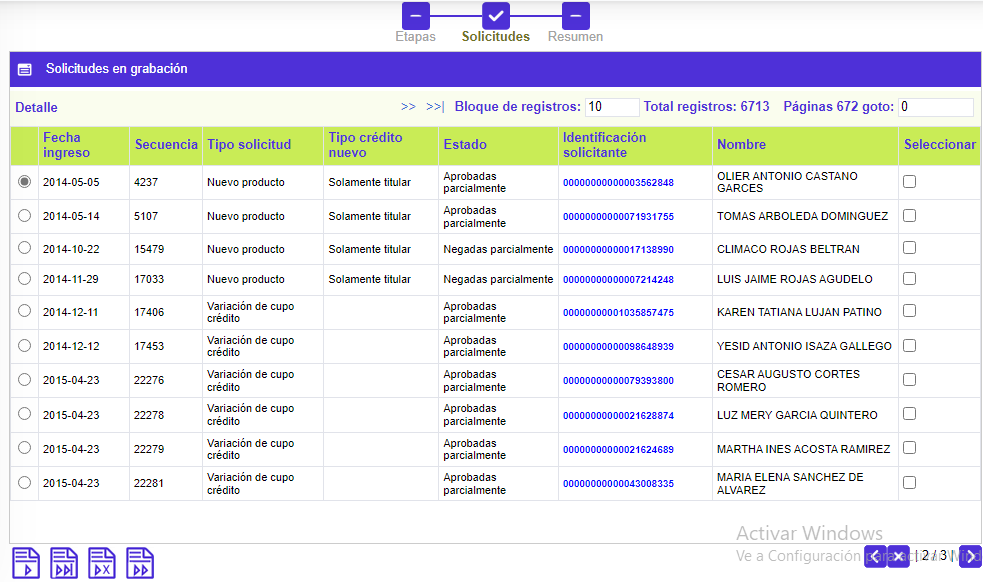

Solicitudes por etapa - Central riesgo Datacrédito
Solicitudes: Este formulario corresponde al segundo paso del wizard, al que se accede desde la opción principal Solicitudes por etapa. En él se pueden consultar las diferentes solicitudes de afiliación que se encuentran en la etapa de Central riesgo Datacrédito.
A través de la opción Detalle de la parte superior, se puede consultar la solicitud seleccionada. Adicionalmente, se puede consultar el detalle del cliente por medio del vínculo ubicado en la Identificación del solicitante. Por último, cuando se trata de una solicitud de Principal con adicional se mostrará la opción Adicionales en la parte superior, la cual invoca el detalle de este tipo de solicitudes.

Fecha ingreso |
Muestra la fecha en la cual se grabó la solicitud. |
Secuencia |
Campo de salida que ilustra el número consecutivo asignado por el sistema y que permite diferenciar e identificar las solicitudes. |
Tipo solicitud |
Muestra el tipo de solicitud a tramitar en el formulario. |
Tipo crédito nuevo |
Campo de salida que identifica qué tipo de cliente o clientes aplican para la solicitud de Crédito nuevo. Puede ser Titular con adicional, Solo titular, o Solo Adicional. |
Estado |
Indica la condición en que se encuentra la solicitud al arribar a esta etapa, las cuales pueden ser: En zona gris, Negada totalmente, Negada parcialmente, Aprobada totalmente o Aprobada parcialmente. |
Identificación solicitante |
Contiene tanto el tipo de documento como el número del mismo, que identifica al solicitante. |
Nombre |
Despliega el nombre del solicitante. |
Adicionalmente, el formulario cuenta con botones en la parte inferior izquierda, a través de los cuales se pueden tomar acciones que afectan a todas las solicitudes que se encuentren filtradas.
|
Avanzar todas las solicitudes forzadamente: Funcionalidad que permite pasar las solicitudes a la siguiente etapa de manera forzada, es decir, aunque no cumplan los requisitos parametrizados para la etapa actual. |
|
Negar todas las solicitudes: Funcionalidad que permite denegar totalmente, de forma manual, todas las solicitudes. |
|
Avanzar todas las solicitudes masivamente: Funcionalidad que permite avanzar las solicitudes hasta la última etapa que tengan en los Parámetros de solicitudes por producto, validando los requisitos necesarios acorde con los parámetros definidos, y negando a aquellas que no los cumplen. |
|
Retroceder etapa para todas las solicitudes: Permite retornar todas las solicitudes que hayan sido filtradas desde el formulario inicial. Si la solicitud ya ha sido aprobada o negada totalmente, no permite su retroceso. |
|
Generar archivo Datacrédito: utilitario que permite la generación del archivo plano destinado a la consulta a la central de riesgo Datacrédito. |
|
Aplicar archivo Datacrédito a todas las solicitudes: Utilitario que permite cargar el archivo de respuesta de la central de riesgo Datacrédito. |
Cada una de las solicitudes cuenta con una casilla de verificación, que debe ser marcada por el usuario en caso de querer aplicar acciones sólo a solicitudes específicas. Estas solicitudes se mostrarán en el tercer paso del wizard: Resumen.